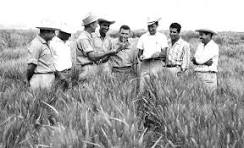

Dr Norman Borlaug
The man who saved a billon lives

Dr. Borlaug dedicated his time and attention to the training of young scientists.
Here's a time line of Dr. Borlaug's life:
- March 25, 1914: Born on his grandfather's farm near Saude, Iowa.
- Childhood: Worked on the family farm, which instilled a strong work ethic and love for agriculture.
- Education: Attended a one-room country schoolhouse and later Cresco High School, where he excelled in athletics and wrestling.
- 1933: Began studies at the University of Minnesota.
- 1937: Earned a B.S. in Forestry. He worked for the U.S. Forest Service that summer before returning to university to complete his education.
- 1939: Received his master's degree.
- 1942: Completed his Ph.D. in Plant Pathology at the University of Minnesota.
- 1942–1944: Worked as a microbiologist for the DuPont de Nemours Foundation.
- 1944: Accepted a position to lead the Cooperative Wheat Research and Production Program in Mexico, a joint project of the Mexican government and the Rockefeller Foundation. This marked the beginning of his work that would later be called the "Green Revolution".
- 1961–1969: Expanded his work to other parts of the world, including India and Pakistan, where his high-yielding, disease-resistant wheat varieties helped drastically increase food production.
- 1970: Awarded the Nobel Peace Prize for his contributions to ending world hunger.
- 1977: Received the Presidential Medal of Freedom.
- 1986: Helped establish the World Food Prize.
- September 12, 2009: Died in Dallas, Texas, at the age of 95.
If you have time, you should read more about the incredible human being Norman Borlaug.